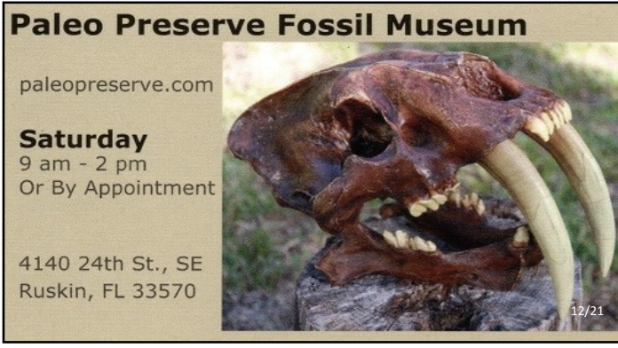

Announcements
Next Meeting Presentation
November 7, 2026TBFC Annual Scholarship Auction with Dr. Bob Sinibaldi
7PM IN-PERSON CLUB MEETING at USF Behavioral Science Room #103
Looking for something special for the
fossil hunter in your life? Maybe
you're hoping to add another spectacular specimen to your own collection.
Either way, this is your chance to pick
up all sorts of great paleo-related
goodies while supporting a very
worthwhile cause. It's a win-win!
The auction will feature a variety of
paleo treasures generously donated
by club members and other supporters. So, if you have a few pesky megalodon teeth lying around or more
mammoth molars than you know
what to do with, why not donate one or two to the auction? Your
contribution could help fund a student's education while finding a
new home for a specimen someone will treasure.
Don't have any fossils you're willing to part with just yet? No problem! All you need is a big heart, an interest in paleontology, and
perhaps a little room in your budget for some bidding. After all, the
real secret to making the Ben Waller Memorial Scholarship Auction
a success is YOU!
Once again, our very own auctioneer extraordinaire, Dr. Bob Sinibaldi, will be
leading the festivities. With his booming voice, hilarious anecdotes, and entertaining auctioneering style, Dr. Bob knows
how to keep things moving and the audience laughing. Even if you
don't plan to bid on anything, the auction is a show in itself!
Of course, there's more to this event than great fossils and good
laughs. The proceeds help support TBFC's operations and the numerous
scholarships the club awards to students in geoscience programs at the
University of South Florida and the University of Florida. These scholarships
help support the next generation of scientists, making this an important event for the future of our field.
If you've never attended one of our auctions, I encourage you to
join us on November 7. Dr. Bob and our generous donors make this
a fun evening for everyone, whether you're an experienced collector, a beginning fossil hunter, or simply someone who enjoys a
good time with fellow club members.
We'll have plenty of exciting paleo-related items up for grabs, including a good selection of legally collected artifacts. And here's
another reason to come prepared to bid: TBFC accepts checks,
credit cards, debit cards, and even gold doubloons! We want to
make it as easy as possible for you to take home something special
from the auction or our paleo store.
Tampa Bay Fossil Chronicles
Hopefully you’ve noticed that TBFC has stepped up its game with the newsletter each month.
Please check out all of the articles in each issue. Only TBFC members receive the Chronicles, we don’t post it online or on Facebook.
Be sure to renew your Fossil
Permits! Never Dig into the River banks! Collection of Artifacts is Illegal on Florida state owned land!
